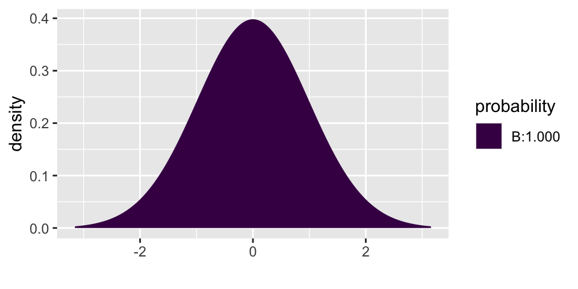
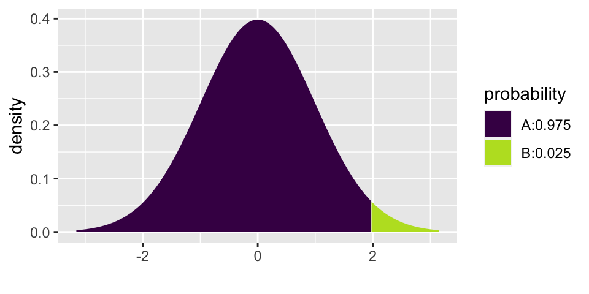

Chapter 5 Inference for numerical data
5.1 3/31/20
- New statistics: mean, standard deviation, standard error of the mean
- Sampling distribution of the sample mean
5.3 4/2/20
- Standardized distribution of the sample mean
- Inference example for one sample mean
5.4 Inference for a single mean, \(\mu\)
5.4.1 Mathematical model for distribution of the sample mean
Before coming up with the mathematical model appropriate for this section, it is important to notice that we almost never know the true variability of the data (i.e., \(\sigma\)). Instead, we almost always have to estimate \(\sigma\) using \(s\), the sample standard deviation. It turns out that when the estimate of the variability is used in the denominator, the sampling distribution becomes more variability (longer tails). Recall that it is the tails of the distribution in which we are the most interested, so we don’t want to get those wrong!!
If \(\sigma\) is somehow known: \[\frac{\overline{X} - \mu}{\sigma/\sqrt{n}} \sim N(0,1)\]
But in the more typical situation where \(\sigma\) is estimated using \(s\): \[\frac{\overline{X} - \mu}{s/\sqrt{n}} \sim t_{df = n-1}\]
5.4.1.1 Hypothesis testing
If \(H_0: \mu = \mu_0\) is true, then we know that: \[\frac{\overline{X} - \mu}{s/\sqrt{n}} \sim t_{df = n-1}\]
That is, we can use the \(t_{df = n-1}\) distribution to find the p-value for the test. Note, in R we we use the function xpt in the mosaic package.
5.4.1.2 Confidence intervals
In the setting where there is no null hypothesis and an interval estimate is needed, the interval is created in the exact same way as was done with proporitons using: \[\overline{X} \pm t_{n-1}^* \cdot SE(\overline{X})\]
Which is the same thing as: \[\overline{X} \pm t_{n-1}^* \cdot s/ \sqrt{n}\]
5.4.2 Example: healthy body temperature12
The study at hand is meant to determine whether the average healthy body temperature is actually 98.6 F.13
Body temperatures (oral temperatures using a digital thermometer) were recorded for healthy men and women, aged 18-40 years, who were volunteers in Shigella vaccine trials at the University of Maryland Center for Vaccine Development, Baltimore. For these adults, the mean body temperature was found to be 98.249 F with a standard deviation of 0.733 F.14
In order to work through the analysis it is imperative that we understand the data that was collected as part of the research.
| center | variability of data | variability of sample means | sample size |
|---|---|---|---|
| \(\overline{X} = 98.249\) F | \(s = 0.733\) F | \(SE(\overline{X}) = s/\sqrt{n} = 0.733 / \sqrt{13} = 0.2033\) | \(n=13\) |
| \(\mu\) = true ave healthy body temp (unknown!) | \(\sigma\) = true sd of healthy body temps (unknown!) | \(SD(\overline{X}) = \sigma/\sqrt{n}\) = unknown! |
5.4.2.1 Hypothesis Test
The first research question we want to ask is: how surprising would it be to select a group of 13 participants who have an average healthy body temperature of 98.249 F ?
The questions is set up perfectly for a hypothesis test!
\(H_0: \mu = 98.6\)
\(H_A: \mu \ne 98.6\)
We use the t-distribution to investigate the claim.
\[t-score = \frac{98.249 - 98.6}{0.733/\sqrt{130}} = -5.46\]
How likely is the standardized version of our test statistic to happen if the null hypothesis is true? Well, if \(H_0\) is true, then the t-statistics should have a t-distribution. So we can use the t-distribution to find the p-value (recall that the p-value is the probability of the data or more extreme if \(H_0\) is true.)
The test statistic is -5.46, and even a two-sided p-value (the area doubled) is way less than 0.001.

## [1] 2.354246e-075.4.2.2 Confidence Interval
Possibly more interesting is the confidence interval which would tell us a range of plausible values for healthy body temperatures.
The confidence interval is given by the following formula: \[\overline{X} \pm t_{n-1}^* \cdot s/ \sqrt{n}\]
and is calculated to be (98.121, 98.376). That is, we are 95% confident that the true average healthy body temperature is somewhere between 98.121 F and 98.376 F. Note that 98.6 F is not in the interval!!! Wow.

## [1] 1.978524## [1] 98.12181## [1] 98.376195.5 Reflection Questions
Inv 2.5, Chance & Rossman, ISCAM↩
Conventional wisdom says that the reason 98.6 has hung around is because it translates to 35 C. Indeed, it it agreed that, to the nearest integer, the average healthy human body temperature is 35 C. But there is also some consensus that it is slightly lower than 35 C (if we are willing to use more significant digits). The idea is that we have hung on to 98.6 because the decimal feels like a precise measurement. In reality, it is just the conversion from 35 C to F.↩
Mackowiak, Wasserman, & Levine, Journal of the American Medical Association, 1992↩